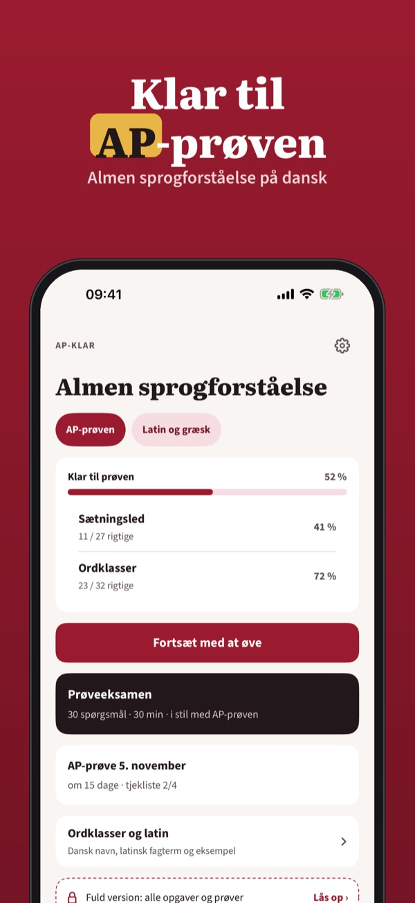
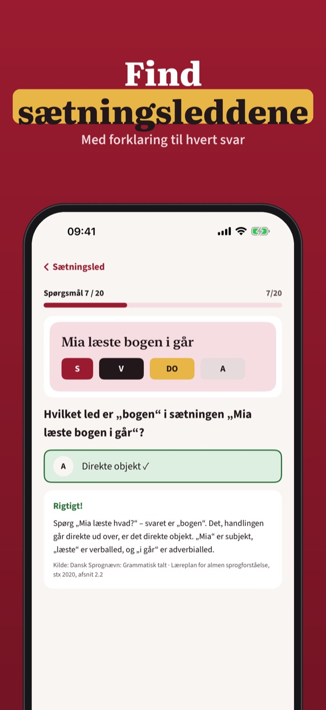
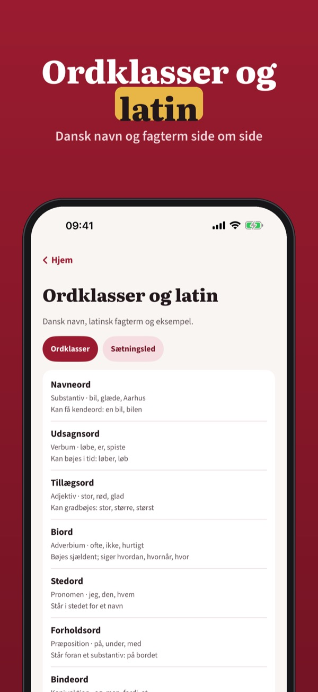

Ordklasser, sætningsled, latin
Træn almen sprogforståelse til AP-prøven: ordklasser, sætningsled, latinske fagtermer og låneord – med forklaring til hvert svar og uden internet.



AP-klar hjælper dig med at træne almen sprogforståelse (AP) i gymnasiet – fra ordklasser og sætningsled til latin, græsk og sprogfamilier.
Du kan øve 20 spørgsmål, ordlisten og tjeklisten uden køb. Den fulde version er et engangskøb, der låser alle spørgsmål, prøveeksamener og statistik op. Intet abonnement.
AP-klar er uafhængig og ikke tilknyttet Børne- og Undervisningsministeriet eller dit gymnasium.
Terms of Use (EULA): https://www.apple.com/legal/internet-services/itunes/dev/stdeula/
Privacy: https://baytechbv.github.io/privacy/ap-traener-dk/